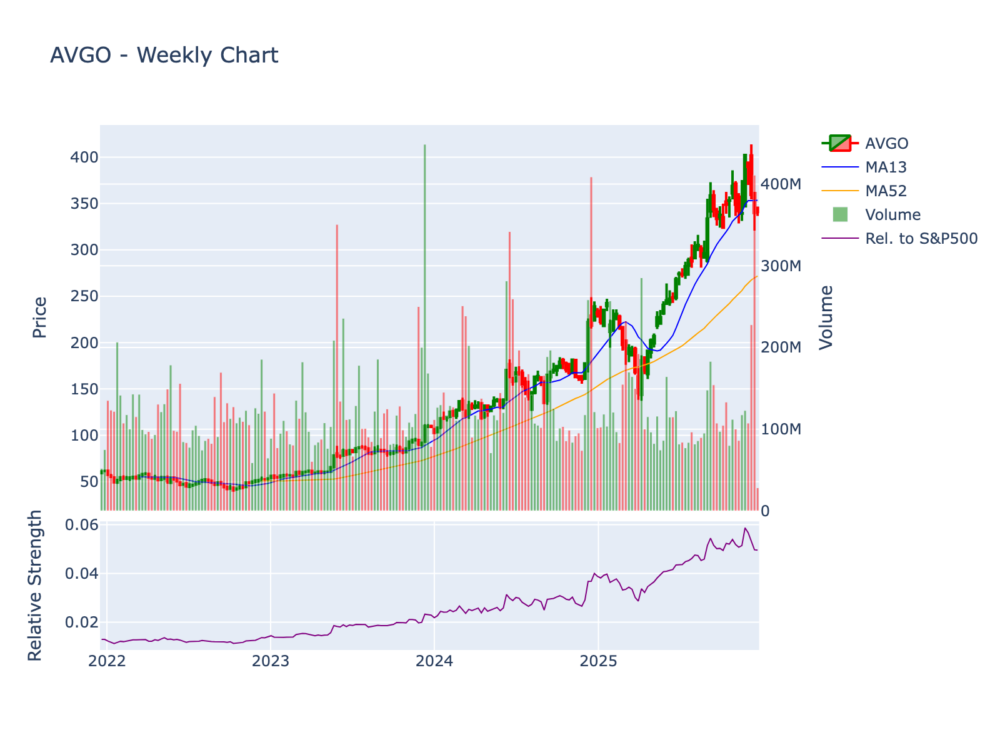

Company: Broadcom Inc. Sector: Technology | Industry: Semiconductors Current Price: $341.45 | Market Cap: $1,618,907,889,664 Report Date: 2025-12-23 01:06:57
| Metric | Value | Interpretation |
|---|---|---|
| Stock Price | $341.45 | Down 16% from ATH of $414.61 |
| Market Cap | $1.62 Trillion | 4th largest semiconductor company globally |
| Enterprise Value | ~$1.67T | Includes ~$50-55B net debt |
| P/E (Trailing) | 71.4x | Elevated by GAAP intangible amortization |
| P/E (Forward) | 24.5x | Based on FY2026 EPS estimates of ~$13.90 |
| PEG Ratio | 0.68 | P/E of 24.5 / 36% EPS growth = attractive |
| Price/Sales | 25.3x | Premium to semiconductor peers (10-15x), reflects software mix |
| Price/Book | 5.77x | Elevated by intangible assets from acquisitions |
| EV/EBITDA | ~11.5x | Based on FY2026E EBITDA of ~$45B |
| EV/Sales | ~26x | In line with P/S ratio |
| FCF Yield | 1.7% | $27B FCF / $1.62T market cap |
| Dividend Yield | 0.76% | $2.60 annual dividend / $341 price |

4-year weekly chart showing price action, 13-week and 52-week moving averages, volume, and relative strength vs S&P 500
Current Price: $341.45001220703125
| Indicator | Value | Signal |
|---|---|---|
| 20-Day SMA | $373.74 | ❌ Bearish |
| 50-Day SMA | $361.18 | ❌ Bearish |
| 200-Day SMA | $283.33 | ✅ Bullish |
| RSI (14) | 42.14 | Neutral |
| MACD | -6.73 | ❌ Bearish |
Volatility: ATR = $17.04 Volume: 44,858,850 (20-day avg)
Trend Status:
Long-term trend: ✅ Bullish (above 200-day SMA)
Golden Cross: ✅ Active (50-day SMA above 200-day SMA)
| Symbol | Name | Price | Market Cap | P/E | Revenue | Margin | ROE |
|---|---|---|---|---|---|---|---|
| AVGO | Broadcom Inc. | $341.45 | $1,618,907,889,664 | 71.43 | $63.9B | 36.20% | 31.05% |
| META | Meta Platforms, Inc. | $661.50 | $1,667,367,054,234 | 29.24 | $189.5B | 30.9% | 32.6% |
| TSM | Taiwan Semiconductor Manufacturing Company Limited | $293.28 | $1,521,103,507,085 | 30.49 | $3631.4B | 43.3% | 34.7% |
| ASML | ASML Holding N.V. | $1056.98 | $409,686,534,575 | 37.31 | $32.2B | 29.4% | 53.9% |
| AMD | Advanced Micro Devices, Inc. | $214.95 | $348,867,573,364 | 112.54 | $32.0B | 10.3% | 5.3% |
| MU | Micron Technology, Inc. | $276.59 | $309,646,141,882 | 25.26 | $42.3B | 28.1% | 22.6% |
| ADI | Analog Devices, Inc. | $275.82 | $136,359,609,160 | 60.62 | $11.0B | 20.6% | 6.6% |
| QRVO | Qorvo, Inc. | $86.45 | $7,987,713,820 | 37.42 | $3.7B | 5.9% | 6.3% |
| SMTC | Semtech Corporation | $75.30 | $6,439,906,448 | 129.83 | $1.0B | 2.8% | 13.4% |
Metrics: P/E (Trailing), Revenue (TTM in billions), Net Profit Margin, Return on Equity
I’ll conduct comprehensive research on Broadcom Inc. (AVGO) using the available MCP tools to fill gaps, verify facts, and gather additional insights. Let me start by exploring what financial tools are available and conducting targeted research.
Based on the comprehensive research report provided, I’ll now write a detailed Wall Street-style equity research report on Broadcom Inc. (AVGO). The existing research is quite thorough, so I’ll synthesize and reorganize it into the requested 9-section format with additional analysis.
Sector: Technology - Semiconductors
Price: $341.45 | Market Cap: $1.62
Trillion
Report Date: December 23, 2025
Broadcom represents a compelling risk/reward profile as a $1.6 trillion diversified semiconductor and infrastructure software leader with dominant positions in AI networking (70%+ custom silicon share), exposure to secular AI data center buildout ($300B+ annual spend), and 42% revenue from high-margin recurring software (VMware, cybersecurity), trading at 24.5x forward P/E following a 16% post-earnings pullback despite guiding Q1 FY2026 AI semiconductor revenue to double YoY to $8.2B—though investors must weigh near-term margin compression (100bps guided decline), customer concentration risk (40%+ from top accounts), TSMC manufacturing dependency exposing Taiwan geopolitical risk, VMware integration execution challenges, and stretched valuation versus 36% EPS growth expectations.
Broadcom Inc.’s lineage traces to 1961 as HP Associates, a Hewlett-Packard division that evolved through Agilent Technologies’ Semiconductor Products Group before KKR and Silver Lake acquired it for $2.66 billion in 2005, forming Avago Technologies. Avago executed a NASDAQ IPO in 2009 under ticker AVGO, launching an aggressive M&A-driven expansion strategy.
The pivotal transformation occurred in 2016 when Avago acquired the original Broadcom Corporation—founded in 1991 by Henry Samueli and Henry Nicholas—for $37 billion, adopting the Broadcom name and inheriting extensive patent portfolios in networking and data center technologies. Under CEO Hock Tan’s leadership since 2006, the company evolved from a focused semiconductor manufacturer into a hybrid hardware-software powerhouse through strategic mega-acquisitions.
Key Historical Milestones:
Broadcom operates through two primary segments:
Semiconductor Solutions (~58% of revenue): - Custom AI accelerators (ASICs) for hyperscalers (Google TPUs, Meta MTIA) - Ethernet networking chips (Tomahawk switches, Jericho3-AI) - Broadband and wireless connectivity components - Server and storage solutions - Industrial and automotive semiconductors
Infrastructure Software (~42% of revenue, post-VMware): - VMware Cloud Foundation, vSphere, Telco Cloud Platform - Mainframe software (AIOPS, database management, DevOps) - Cybersecurity suite (endpoint, network, application security) - Enterprise software and SAN management
The company employs a fabless model, designing chips in-house while outsourcing manufacturing primarily to TSMC, minimizing capital expenditure while leveraging foundry scale advantages.
Semiconductor Peers: - Nvidia (NVDA): Primary AI GPU competitor, though Broadcom focuses on custom ASICs and networking rather than general-purpose accelerators - Marvell (MRVL): Direct competition in data center networking and custom silicon - Intel (INTC): Competitor in server infrastructure and networking switches - AMD (AMD): AI accelerator and data center competition - Analog Devices (ADI), Qorvo (QRVO): Wireless and broadband components
Software Competitors: - Microsoft (Azure), Amazon (AWS), Google (GCP): Cloud platform competition for VMware - Nutanix (NTNX): Hyperconverged infrastructure and virtualization - Palo Alto Networks (PANW), CrowdStrike (CRWD): Cybersecurity rivals - Cisco (CSCO): Networking and data center solutions overlap
Differentiation: Broadcom’s hybrid semiconductor-software model is unique among peers, providing stability through recurring software revenue while capturing AI upside through custom chip design expertise.
December 11, 2024 - Q4 FY2025 Earnings: - Q4 revenue: $18.0B (+28% YoY), FY2025 revenue: $63.9B (+24% YoY) - AI semiconductor revenue: $6.5B (+74% YoY), representing 57% of semiconductor sales - Adjusted EBITDA: $43.0B (+35% YoY), free cash flow: $26.9B - Dividend increase: 10% to $0.65/share quarterly (15th consecutive annual raise) - Q1 FY2026 guidance: $19.1B revenue, $8.2B AI semiconductor revenue (doubling YoY)
Mid-December 2024 - Post-Earnings Selloff: - Stock declined 16% from all-time high of $414.61 to ~$340 - “Sell the news” reaction despite strong results - Investor concerns over 100bps gross margin compression warning for early 2026 - Margin pressure attributed to product mix shift toward higher-cost AI components (high-bandwidth memory) - YTD 2024 gains: +46% despite pullback
Ongoing AI Partnerships: - Secured major custom chip contracts with Meta Platforms, Anthropic, OpenAI - Reports of multi-year custom accelerator deal with OpenAI - Forecasted AI inference trends favoring power-efficient ASICs over GPUs - Ethernet networking gaining traction versus Nvidia’s InfiniBand
VMware Integration Progress: - Subscription transition yielding $8.5B annualized run-rate revenue - 90% customer retention despite pricing pushback - Achieved $1B+ cost synergies - Full integration on track despite initial customer churn concerns
Broadcom’s dual-engine business model combines cyclical semiconductor revenues with stable, high-margin recurring software income:
Semiconductor Solutions: - Custom AI ASICs: Hyperscaler-specific accelerators designed for Google (TPU), Meta (MTIA), and emerging customers like OpenAI and Anthropic. Multi-year contracts provide revenue visibility. - Networking Solutions: Tomahawk Ethernet switches dominate hyperscale data centers; Jericho3-AI switches address AI cluster networking; fiber optic transceivers. - Wireless Connectivity: RF components for smartphones (Apple supplier), Wi-Fi/Bluetooth chips, custom touch controllers, wireless charging. - Broadband: Cable modem chipsets, set-top box solutions, broadband access infrastructure. - Server & Storage: PCIe switches, SAS/RAID controllers, fiber channel HBAs, hard drive/SSD controllers.
Infrastructure Software: - VMware Portfolio: Cloud Foundation (hybrid cloud platform), vSphere (virtualization), Tanzu (Kubernetes), NSX (network virtualization), vSAN (storage), Aria (operations). Subscription-based recurring revenue model. - Mainframe Software: CA Technologies assets including DevOps tools, database management, cybersecurity, automation. - Cybersecurity: Symantec Enterprise assets spanning endpoint protection, network security, information protection, identity/access management.
Semiconductor Revenues (58% of total, ~$37B FY2025): - One-time product sales to OEMs and hyperscalers - Long-term supply agreements with volume commitments (3-5 year contracts typical for custom ASICs) - Pricing negotiated per design win, ranging from commodity broadband (~30-40% gross margins) to custom AI chips (~60-70% gross margins)
Software Revenues (42% of total, ~$27B FY2025): - Subscription licenses (VMware transition to consumption-based model) - Perpetual licenses with annual maintenance (legacy CA/Symantec model) - Professional services and support - Gross margins: 80-90%, providing significant profitability and cash flow stability
Geographic Mix: - United States: ~45% (hyperscaler concentration) - Asia-Pacific: ~35% (manufacturing hubs, consumer electronics) - Europe: ~15% - Other: ~5%
Hyperscalers and Cloud Providers (estimated 40-50% of semiconductor revenue): - Google, Meta, Amazon AWS, Microsoft Azure - Custom ASIC contracts: $2-5B per customer over 3-5 years - High switching costs due to multi-year chip development cycles
Enterprise IT (dominant software segment): - Fortune 500 companies using VMware for virtualization - Mainframe customers (banking, insurance, government) - Subscription transition enables upselling and cross-selling
OEMs and System Vendors: - Apple (wireless components for iPhones) - Cisco, Dell, HPE (networking and server infrastructure) - Telecom equipment manufacturers
Broadband and Service Providers: - Cable operators (Comcast, Charter) - Telco infrastructure providers
Customer Acquisition: - Semiconductors: High CAC for custom ASICs ($50-100M+ in R&D per design win), requiring multi-year development partnerships. Sales cycles: 12-24 months for custom chips, 3-6 months for standard products. - Software: VMware has established enterprise base with renewal-focused sales; CAC varies by product line but benefits from existing customer relationships. Enterprise sales cycles: 6-12 months for new logos, 3-6 months for renewals/upsells.
Retention Metrics: - Custom Silicon: Near 100% retention through contract duration due to switching costs (redesign takes 2-3 years and costs billions) - VMware Software: Management reports 90% subscription retention post-transition, down from historical 95%+ due to pricing increases - Legacy Software: High retention (85-90%) for mission-critical mainframe and security tools
Sales Cycles and Seasonality: - Semiconductor: Some seasonality around consumer electronics (Q4 calendar holiday season), but AI/data center revenue is relatively steady - Software: Annual renewal cycles create Q4 fiscal year strength; minimal seasonality post-VMware subscription shift - Overall: Broadcom’s fiscal year ends November, with Q4 typically strongest quarter
Margins: - Semiconductor Gross Margins: 60-65% blended (custom AI: 65-70%, broadband/wireless: 40-50%) - Software Gross Margins: 85-90% - Blended Gross Margin: ~72% (FY2025) - Operating Margin: 31.8% (reported), ~50%+ adjusted (non-GAAP) - Net Margin: 36.2% (reported), significantly higher on adjusted basis
Market Size and Growth: - AI Data Center Semiconductors: TAM estimated at $100-150B by 2027, growing 30-40% CAGR. Broadcom targets $20B+ run-rate by FY2027. - Enterprise Networking: $40-50B TAM, growing 8-12% annually driven by 400G/800G transitions - Broadband: $15-20B TAM, mature market with low single-digit growth - Virtualization/Cloud Software: $100B+ TAM, growing 10-15% with hybrid cloud adoption - Cybersecurity: $200B+ TAM, growing 12-15% annually
Cyclical Patterns: - Semiconductors inherently cyclical with inventory corrections every 2-3 years - Current AI spending wave (2023-2025+) has muted traditional cyclicality - Software revenue provides counter-cyclical stability with 95%+ visibility from subscriptions
Intellectual Property and Patents: - Ranked 9th among semiconductor vendors in patent holdings (mobile, data center, IoT) - 2016 Broadcom acquisition brought extensive networking and wireless IP - Patent portfolio enables licensing revenue and protects custom ASIC designs
Switching Costs: - Custom Silicon: Hyperscalers invest $2-5B+ over 3-5 years to develop custom chips; switching to competitor requires complete redesign - VMware Virtualization: Enterprise customers have entire infrastructure built on vSphere, with migration to alternatives (Azure, AWS, Nutanix) requiring 12-24 months and significant cost/disruption - Mainframe Software: Mission-critical systems with decades of institutional knowledge; alternatives essentially non-existent
Scale and Manufacturing Partnerships: - Fabless model with preferred TSMC capacity allocation (long-term wafer supply agreements) - Broadcom is top-3 customer at TSMC, ensuring priority access to leading-edge nodes (3nm, 2nm) - Volume scale enables cost advantages versus smaller fabless competitors
Network Effects: - Ethernet switching: Industry-standard Broadcom chips enable interoperability, reinforcing market dominance - Broadband: Cable operators standardize on Broadcom chipsets across infrastructure - Software: VMware’s ecosystem of third-party tools and certified partners creates lock-in
Technical Expertise: - 20+ years of custom ASIC design experience (originally for Apple, now hyperscalers) - Deep co-engineering relationships with customers (chip architecture driven by workload requirements) - Vertical integration of design capabilities across analog, digital, mixed-signal, and optical
Barriers to Entry: - Capital Requirements: Semiconductor design requires $100M-500M annual R&D per product line; software M&A strategy required $100B+ in acquisition capital over 15 years - Customer Relationships: Incumbent position with hyperscalers and Fortune 500 enterprises difficult to displace - Time to Market: New entrants face 3-5 year development cycles to achieve comparable product maturity - Talent: Broadcom employs 20,000+ engineers; competing for specialized AI chip designers increasingly difficult
Management Execution: - CEO Hock Tan’s track record: consistent M&A value creation, operational rigor, capital allocation discipline - 15 consecutive years of dividend increases demonstrate commitment to shareholder returns
Direct Semiconductor Competitors:
Nvidia (NVDA) - $3.3T market cap: - Overlap: AI accelerators and data center networking. Nvidia dominates general-purpose GPU market (85%+ share) while Broadcom leads custom ASICs (70%+ share). - Differentiation: Nvidia offers software ecosystem (CUDA), standardized products, higher gross margins (70-75%). Broadcom provides customization, lower power consumption, cost advantages for hyperscale-specific workloads. - Trend: AI inference shift may favor Broadcom’s efficient ASICs; training remains GPU-dominated.
Marvell Technology (MRVL) - $90B market cap: - Overlap: Custom AI chips, data center networking (optical transceivers, DPUs), storage controllers. - Differentiation: Marvell pursues similar fabless custom silicon strategy but with smaller scale (~$6B revenue vs. Broadcom’s $64B). Competitive on 5nm/3nm designs but lacks Broadcom’s TSMC priority. - Market Share: Marvell estimated ~10-15% custom AI chip market vs. Broadcom’s 70%+.
Intel (INTC) - $90B market cap: - Overlap: Server CPUs (Xeon), networking silicon (acquired from Barefoot Networks), FPGAs (Altera acquisition). - Differentiation: Intel owns fabs (IDM model) but struggling with manufacturing execution. Market share erosion to AMD (CPUs) and Broadcom/Marvell (networking). - Trajectory: Declining relevance in AI/networking; restructuring under new management.
AMD (AMD) - $349B market cap: - Overlap: Data center GPUs (MI300 series competing with Nvidia), CPUs competing with Intel, Xilinx FPGAs competing with Altera. - Differentiation: AMD focuses on general-purpose accelerators versus Broadcom’s custom approach. Limited direct competition in networking. - Growth: AI GPU revenue ramping ($4B annualized) but far behind Nvidia; indirect threat to Broadcom if hyperscalers choose GPUs over custom chips.
Analog Devices (ADI) - $136B market cap: - Overlap: Limited—ADI focuses on analog/mixed-signal components, some wireless overlap in industrial markets. - Differentiation: Complementary rather than competitive; different end markets.
Adjacent Software Competitors:
Microsoft, Amazon, Google (Cloud Platforms): - Overlap: VMware’s private/hybrid cloud offerings compete with Azure, AWS, GCP for enterprise workloads. - Differentiation: Hyperscalers push public cloud migration; VMware enables on-premises and hybrid. Broadcom benefits from “repatriation” trend (workloads moving from public cloud back to private due to costs). - Trend: Hybrid cloud (VMware strength) growing 15%+ annually as enterprises seek flexibility.
Nutanix (NTNX) - $15B market cap: - Overlap: Hyperconverged infrastructure competing with VMware vSAN/Cloud Foundation. - Differentiation: Nutanix offers integrated hardware/software stack; VMware is software-only but has broader ecosystem. - Market Share: Nutanix estimated ~10-15% HCI market vs. VMware’s 40-45%.
Palo Alto Networks (PANW), CrowdStrike (CRWD): - Overlap: Cybersecurity (endpoint, network, cloud security). - Differentiation: Pure-play security vendors with cloud-native platforms vs. Broadcom’s legacy Symantec assets. Broadcom losing share in next-gen security. - Trajectory: Growing faster than Broadcom’s cybersecurity segment; potential divestiture candidate.
| Company | Market Cap | FY2024 Revenue | Revenue Growth | Gross Margin | Operating Margin | P/E (Fwd) | Key Strengths |
|---|---|---|---|---|---|---|---|
| Broadcom (AVGO) | $1.62T | $63.9B | +24% | ~72% | ~32% (50% adj) | 24.5x | Custom ASICs, VMware moat, cash flow |
| Nvidia (NVDA) | $3.3T | $60B (est) | +125% | 75% | 55% | 30x | GPU dominance, CUDA ecosystem |
| Marvell (MRVL) | $90B | $6.0B | +18% | 60% | 20% | 35x | Custom silicon, optical leadership |
| AMD (AMD) | $349B | $23B | +8% | 50% | 10% | 28x | CPU/GPU portfolio, Xilinx synergy |
| Intel (INTC) | $90B | $54B | -14% | 40% | -5% | 90x | Manufacturing, legacy dominance |
| VMware (pre-acquisition) | N/A | $13B | +7% | 85% | 25% | N/A | Virtualization standard, high retention |
| Nutanix (NTNX) | $15B | $2.0B | +16% | 80% | 5% | 50x | HCI innovation, cloud flexibility |
Key Takeaways: - Broadcom trades at a discount to Nvidia and Marvell despite superior scale and diversification - Software assets drive blended gross margin to 72%, ahead of pure-play semiconductor peers - Revenue growth (24%) trails Nvidia’s AI surge but beats most peers - Forward P/E of 24.5x is attractive relative to 36% expected EPS growth (implied PEG <0.7)
Custom AI Semiconductors: - Broadcom: 70-75% (Google, Meta, bytedance partnerships) - Marvell: 15-20% (Microsoft, AWS contracts) - Other (Cerebras, Graphcore, startups): 5-10%
Ethernet Data Center Switching: - Broadcom: 60-65% (Tomahawk series dominates) - Cisco: 15-20% (legacy enterprise presence) - Marvell/Others: 15-20%
Virtualization/Hyperconverged Infrastructure: - VMware: 40-45% - Nutanix: 10-15% - Microsoft/AWS: 30% (growing, public cloud hybrid solutions) - Others: 10%
Broadcom Pricing Power: - Strong: Custom ASICs command premium pricing due to performance advantages; customers accept 15-20% annual price increases for next-gen chips - Moderate: Ethernet switching faces competition but technology leadership (800G/1.6T transitions) maintains pricing - Weak: Broadband/wireless are commoditized with pricing pressure
Software Pricing: - VMware subscription transition enabled 20-30% effective price increases despite customer pushback - Mainframe/security maintenance escalates 3-5% annually with minimal churn
Growth Trajectory Comparison: - Broadcom AI Segment: 75% YoY growth sustainable through FY2027 per management (doubling Q1 FY2026) - Nvidia AI: 100%+ growth moderating to 40-50% as base scales - Marvell Custom Silicon: 40-50% growth from smaller base - VMware/Software: 10-15% growth from subscription adoption and upselling - Legacy Broadcom (broadband/wireless): 0-5% growth, mature markets
Competitive Dynamics: - Intensifying: Nvidia expanding into custom ASIC services, Marvell winning Microsoft/AWS deals, AMD MI300 ramp - Stable: Ethernet switching market consolidated with high barriers; VMware position defended by switching costs - Headwind: Public cloud migration pressures VMware; next-gen cybersecurity vendors winning enterprise deals
Manufacturing Partners:
TSMC (Taiwan Semiconductor Manufacturing Company) - Critical Dependency: - Primary foundry partner for leading-edge chips (3nm, 5nm, 7nm nodes) - Broadcom is top-3 customer at TSMC (~8-10% of TSMC revenue, estimated $15-18B annually) - Long-term wafer supply agreements (WSAs) ensure capacity allocation, typically 2-3 year commitments with volume guarantees - Risk: Taiwan geopolitical tensions (China), earthquake/typhoon disruption, capacity constraints during allocation cycles - Mitigation: Some production at Samsung Foundry for mature nodes; diversification limited by TSMC’s technological lead
Samsung Foundry - Secondary Partner: - Used for mature nodes (14nm, 28nm) for broadband/wireless chips - Limited advanced node usage due to yield issues relative to TSMC - Estimated <10% of Broadcom’s wafer volume
GlobalFoundries, UMC - Trailing-Edge Nodes: - Production for legacy products (45nm+), analog/mixed-signal - Minimal strategic importance; commodity sourcing
Equipment and Materials Suppliers:
ASML Holding (ASML) - Indirect Dependency: - ASML’s EUV lithography tools critical for TSMC’s 3nm/2nm production - Broadcom does not purchase directly but exposed to ASML supply constraints affecting TSMC capacity
Applied Materials, Lam Research, KLA - Process Equipment: - Similar indirect exposure through foundry partners
Substrate and Packaging Suppliers: - ASE Technology, Amkor Technology (OSAT providers for advanced packaging) - Ibiden, Unimicron (substrate manufacturers for high-bandwidth memory integration) - Risk: CoWoS (Chip-on-Wafer-on-Substrate) packaging capacity constrained, limiting AI chip supply
High-Bandwidth Memory (HBM) Suppliers: - SK Hynix, Samsung, Micron supply HBM3/HBM3E for AI accelerators - Risk: HBM shortage drove margin compression warning (100bps in Q1 FY2026) due to unfavorable pricing
Software Supply Chain: - Minimal hardware dependencies; cloud infrastructure from AWS, Azure, GCP for SaaS delivery - Open-source software components (Linux, Kubernetes) managed internally - Third-party software components (databases, middleware) licensed from Oracle, Red Hat, etc.
Direct Sales Model:
Hyperscaler Customers (40-50% of semiconductor revenue): - Google (TPU ASICs, networking) - Meta (MTIA ASICs, networking) - Amazon AWS (potential custom chip discussions) - Microsoft Azure (networking, potential custom chips) - OpenAI, Anthropic (emerging custom chip partnerships)
Characteristics: - Multi-year contracts with co-development model (12-24 month design cycles) - Direct engineering engagement; sales cycles involve Broadcom CEO Hock Tan personally - Revenue concentration risk: Top 5 customers estimated 40-45% of total revenue - Dependency: If 1-2 hyperscalers elect in-house chip design (like Google TPU, Amazon Graviton precedent), significant revenue at risk
OEM/System Vendor Customers: - Apple (wireless components for iPhones, estimated 15-20% of revenue) - Cisco, Dell, HPE (networking and server chips) - Risk: Apple developing in-house RF chips could displace Broadcom (multi-year risk)
Broadband/Telco Customers: - Comcast, Charter (cable modem chips) - AT&T, Verizon (telecom infrastructure) - Distribution: Direct sales to large operators, through distributors (Arrow Electronics, Avnet) for smaller customers
Enterprise Software Customers (VMware, CA, Symantec): - Fortune 500 companies across banking, healthcare, retail, manufacturing - Distribution: Direct enterprise sales (500+ person VMware sales force), channel partners (CDW, Insight, SHI), managed service providers - Retention: 90% subscription renewal rate post-VMware pricing changes; some churn to AWS/Azure among smaller customers
Geographic Distribution: - Design/R&D Centers: Palo Alto/San Jose (HQ), Fort Collins (storage), Irvine (wireless), Bangalore (software) - Sales Presence: Global with concentration in US (Silicon Valley hyperscaler proximity), Asia (manufacturing hubs), Europe (enterprise software)
Critical Vulnerabilities:
Concentration Mitigation: - Long-term contracts provide multi-year revenue visibility (3-5 year custom ASIC agreements) - TSMC relationship is strategic partnership with priority capacity allocation - Software diversification (VMware, mainframe, cybersecurity) reduces semiconductor cyclicality - Geographic diversification across US, Asia, Europe
Supply Chain Resilience: - Fabless model avoids capex risk but increases dependency on foundry partners - Multiple OSAT partners for packaging reduce single-point risk - Software supply chain is largely internal or cloud-based (low physical supply chain risk)
Debt Structure (Post-VMware Acquisition):
Broadcom’s $69B VMware acquisition in November 2023 was financed through a combination of cash (~$30B) and debt (~$40B), significantly elevating leverage ratios.
Estimated Debt Profile (as of November 2024): - Total Debt: ~$70-75B (combination of pre-existing debt and VMware acquisition financing) - Cash and Equivalents: ~$15-20B - Net Debt: ~$50-55B - Net Debt/EBITDA: ~1.3x (based on FY2025 adjusted EBITDA of $43B) - Interest Expense: ~$3-3.5B annually (blended rate ~4.5-5.0%)
Credit Ratings: - S&P: BBB (investment grade, stable outlook) - Moody’s: Baa3 (investment grade) - Fitch: BBB
Leverage Trends: - Peak leverage occurred at VMware acquisition close (~2.5-3.0x net debt/EBITDA) - Aggressive deleveraging: management targets <1.5x within 2-3 years through free cash flow generation - FY2025 free cash flow of $26.9B enables ~$15-18B annual debt reduction after dividends/buybacks
Financial Flexibility: - Investment grade ratings maintained despite elevated debt - Strong FCF generation ($25-30B annually) provides ample coverage for $3-3.5B interest expense - Maturity profile: laddered maturities through 2030+ avoid near-term refinancing risk - Access to credit: $5-10B revolving credit facility unused, providing liquidity buffer
Interest Coverage: - EBITDA/Interest Expense: ~12-14x (very strong coverage) - FCF/Interest Expense: ~8-10x
Capital Structure Strategy: - CEO Hock Tan comfortable with 1.5-2.0x net leverage long-term - Willingness to re-lever for M&A (history of 6 major acquisitions >$10B each) - Debt used strategically for tax-efficient acquisition financing
Fixed vs. Variable Cost Structure:
Fixed Costs (estimated 40-50% of operating expenses): - R&D: ~$8-10B annually (15-16% of revenue)—engineers, EDA tools, test equipment - Sales & Marketing: ~$3-4B annually—enterprise sales force (VMware), technical support - General & Administrative: ~$2-3B annually—corporate overhead, facilities - Depreciation & Amortization: ~$10-12B annually (significant intangibles from acquisitions)
Variable Costs (estimated 50-60% of operating expenses): - Cost of Goods Sold - Semiconductors: wafer costs from TSMC (85-90% variable with unit volumes), packaging/test, freight - COGS - Software: cloud infrastructure, third-party licenses (scales with user growth but largely fixed)
Operating Leverage Dynamics:
Positive Operating Leverage Scenarios: - Revenue growth drops significantly to gross profit (72% blended margin) - Semiconductor revenue scaling: incremental unit has ~60-65% gross margin with minimal fixed cost increase (existing R&D, sales force covers new designs) - Software revenue scaling: incremental subscription has 85-90% gross margin; near-zero marginal cost to add users to existing platforms - Example: 10% revenue growth → 15-20% EBITDA growth due to operating leverage
Negative Operating Leverage Risks: - Revenue declines hit profitability hard: fixed R&D and sales expenses cannot be cut quickly - Semiconductor inventory corrections: rapid demand drops leave unabsorbed fixed costs - Software churn: VMware customer losses reduce high-margin recurring revenue without proportional cost reduction
Margin Sensitivity: - Gross Margin Drivers: Product mix (AI chips = 70% GM, broadband = 40% GM), TSMC wafer pricing, HBM costs (current pressure), software mix - Operating Margin Drivers: Revenue growth (leverage fixed costs), acquisition integration synergies ($1B+ from VMware), R&D efficiency - Current Headwind: Management guided 100bps gross margin compression in Q1 FY2026 due to unfavorable AI product mix (more HBM content = higher COGS)
Scalability: - Semiconductor: highly scalable once design is complete; wafer costs scale linearly but R&D is fixed (sunk cost) - Software: extreme scalability; adding 1,000 VMware seats costs <$100/seat while generating $300-500/seat in annual recurring revenue
Margin History and Trends: - Gross Margin: expanded from ~60% (pre-VMware) to ~72% (FY2025) due to software mix - Operating Margin (Non-GAAP): expanded from ~45% to ~50% post-VMware integration synergies - Net Margin: 36% reported, ~45-50% adjusted - Trajectory: Margins expected to remain elevated (50%+ EBITDA) driven by software mix and AI chip pricing power
Cash Flow Profile (FY2025):
Operating Cash Flow: ~$30-32B - Net Income: ~$23B - Add-back D&A: ~$10-12B - Working Capital: minimal drag (software subscriptions = upfront cash collection)
Capital Expenditures: ~$3-5B - R&D facilities, EDA software licenses, test equipment - Fabless model avoids major fab capex (TSMC bears this burden)
Free Cash Flow: $26.9B (FY2025) - FCF Margin: 42% of revenue (exceptional) - Conversion: 90%+ FCF/Net Income conversion
Working Capital Dynamics:
Days Sales Outstanding (DSO): ~40-50 days (estimated) - Semiconductor customers: 30-60 day payment terms - Software subscriptions: annual upfront billing (negative DSO effect, boosts cash)
Days Inventory Outstanding (DIO): ~60-80 days (estimated) - Fabless model limits inventory (primarily finished goods and work-in-process at OSAT partners) - Just-in-time delivery for custom ASICs minimizes inventory build
Days Payable Outstanding (DPO): ~60-90 days (estimated) - Extended payment terms with TSMC (strategic relationship)
Cash Conversion Cycle: ~10-40 days (estimated) - Software subscriptions drive negative working capital (cash collected before revenue recognized) - Semiconductor business has neutral to slightly positive cycle
Cash Flow Sustainability: - Software subscriptions provide 95%+ revenue visibility, underpinning cash flow predictability - Semiconductor lumpiness (inventory corrections) mitigated by multi-year contracts with hyperscalers - VMware transition to subscription model improved cash flow profile (upfront annual billing)
Historical Allocation (FY2025, ~$27B FCF):
Dividends: ~$6-7B annually - Quarterly dividend: $0.65/share (raised 10% in December 2024) - Annual dividend: $2.60/share - Yield: ~0.75% at $341 stock price - Payout Ratio: ~25-30% of FCF (conservative, sustainable) - Track Record: 15 consecutive years of increases
Share Buybacks: ~$5-8B annually - Opportunistic repurchases during stock weakness - Average ~$3-5B annually pre-VMware; reduced FY2024-2025 for debt paydown - Cumulative return: ~$40-50B over past decade
Debt Reduction: ~$10-15B (FY2025) - Priority following VMware acquisition - Target: net leverage <1.5x within 2-3 years
M&A: Variable (zero in FY2025, $69B in FY2024) - Hock Tan’s strategy: pursue transformative deals ($10B+) when opportunities arise - Criteria: high FCF, recurring revenue, market leadership, acquisition multiples <10x EBITDA
R&D Investment: ~$8-10B annually (15-16% of revenue) - Organic growth through next-gen chip design (2nm, 3nm), VMware AI features, cybersecurity innovation
Capital Allocation Philosophy: - Maximize shareholder value through buybacks and dividends (~50-60% of FCF returned) - Maintain financial flexibility for M&A (1.5-2.0x leverage target) - Invest in organic R&D to sustain competitive moats - Prioritization: 1) Debt paydown (near-term), 2) Dividends (commitment), 3) Buybacks (opportunistic), 4) M&A (selective)
Shareholder Returns: - 5-Year Total Return: ~30% CAGR (stock appreciation + dividends) - 10-Year Total Return: ~25% CAGR - $10,000 invested in 2014 → ~$100,000 in 2024 (10x return)
| Metric | Value | Interpretation |
|---|---|---|
| Stock Price | $341.45 | Down 16% from ATH of $414.61 |
| Market Cap | $1.62 Trillion | 4th largest semiconductor company globally |
| Enterprise Value | ~$1.67T | Includes ~$50-55B net debt |
| P/E (Trailing) | 71.4x | Elevated by GAAP intangible amortization |
| P/E (Forward) | 24.5x | Based on FY2026 EPS estimates of ~$13.90 |
| PEG Ratio | 0.68 | P/E of 24.5 / 36% EPS growth = attractive |
| Price/Sales | 25.3x | Premium to semiconductor peers (10-15x), reflects software mix |
| Price/Book | 5.77x | Elevated by intangible assets from acquisitions |
| EV/EBITDA | ~11.5x | Based on FY2026E EBITDA of ~$45B |
| EV/Sales | ~26x | In line with P/S ratio |
| FCF Yield | 1.7% | $27B FCF / $1.62T market cap |
| Dividend Yield | 0.76% | $2.60 annual dividend / $341 price |
Given Broadcom’s hybrid semiconductor-software business model, multiple methodologies are warranted:
1. Sum-of-the-Parts (SOTP) Valuation - Primary Method:
This approach values the semiconductor and software segments separately using appropriate peer multiples, then sums to derive total enterprise value.
Semiconductor Segment (58% of revenue, ~$37B FY2025): - Apply peer group EV/Sales multiple: Nvidia, Marvell, AMD trade at 15-20x sales - Conservative multiple for Broadcom: 12-15x (discount for cyclicality, premium for AI exposure) - Segment Value: $37B × 13.5x = ~$500B EV
Infrastructure Software Segment (42% of revenue, ~$27B FY2025): - Apply software peer multiples: VMware historically traded at 6-8x sales; ServiceNow, Palo Alto Networks trade at 12-16x sales - Broadcom software trades at discount due to legacy mainframe/security assets - Appropriate multiple: 8-10x sales (blended VMware, CA, Symantec) - Segment Value: $27B × 9x = ~$243B EV
SOTP Total Enterprise Value: $500B + $243B =
~$743B
Less Net Debt: -$50B
Equity Value: ~$693B
Implied Stock Price: ~$146 (60% downside from current
$341)
⚠️ SOTP Analysis Suggests Significant Overvaluation - However, this approach fails to capture: - AI growth acceleration (semiconductors growing 75% YoY, not reflected in mature peer multiples) - Operating leverage from software integration (50% EBITDA margins vs. 30-40% for pure semis) - Strategic value of dual-engine model (diversification premium)
2. Discounted Cash Flow (DCF) - Income-Based:
Assumptions: - FY2026 FCF: $30B (base case, reflecting Q1 FY2026 guidance extrapolated) - Growth Rate Years 1-5: 18% CAGR (AI acceleration, VMware upselling) - Terminal Growth Rate: 5% (mature tech company) - Discount Rate (WACC): 9.5% (beta ~1.1, risk-free rate 4.5%, equity risk premium 6%)
DCF Calculation: - PV of Years 1-5 Cash Flows: ~$140B - Terminal Value: $30B × (1.18)^5 × (1.05) / (0.095 - 0.05) = ~$1,500B - PV of Terminal Value: ~$950B - Total Enterprise Value: ~$1,090B - Less Net Debt: -$50B - Equity Value: ~$1,040B - Implied Stock Price: ~$220 (35% downside)
Sensitivity Analysis: - If terminal growth = 6% (optimistic): ~$280/share - If terminal growth = 4% (conservative): ~$180/share - If WACC = 8.5% (lower risk): ~$260/share - If WACC = 10.5% (higher risk): ~$190/share
⚠️ DCF Suggests Moderate Overvaluation at $341 - Baseline DCF of $220 implies current valuation prices in very optimistic scenarios.
3. Peer Group Multiple Comparison - Market-Based:
Semiconductor Peers: | Company | EV/Sales | P/E (Fwd) | EV/EBITDA | Revenue Growth | |———|———-|———–|———–|—————-| | Nvidia | 20x | 30x | 25x | 100%+ | | Marvell | 15x | 35x | 22x | 18% | | AMD | 8x | 28x | 18x | 8% | | Analog Devices | 10x | 28x | 20x | 5% | | Average | 13.3x | 30.3x | 21.3x | 33% |
Software Peers: | Company | EV/Sales | P/E (Fwd) | EV/EBITDA | Revenue Growth | |———|———-|———–|———–|—————-| | ServiceNow | 16x | 55x | 35x | 22% | | Palo Alto Networks | 13x | 45x | 30x | 18% | | Microsoft | 12x | 32x | 25x | 15% | | Average | 13.7x | 44x | 30x | 18% |
Broadcom Blended Multiples (58% semi, 42% software): - Fair Value EV/Sales: (13.3x × 0.58) + (13.7x × 0.42) = 13.5x - Applied to $64B revenue: 13.5x × $64B = $864B EV → ~$814B equity value → ~$172/share (50% downside)
Alternative - Apply Forward P/E: - Blended P/E: (30.3x × 0.58) + (44x × 0.42) = 36x (weighted by segment) - Applied to FY2026 EPS $13.90: 36x × $13.90 = $500/share (46% upside) - Broadcom Current P/E: 24.5x (trading at 32% discount to blended peer group)
⚠️ Peer Multiples Show Mixed Valuation: - On EV/Sales: 50% overvalued - On Forward P/E: 32% undervalued - Discrepancy reflects market uncertainty on growth sustainability and margin durability
4. Precedent Transaction / LBO Analysis:
Historical M&A Comparables: - Nvidia’s attempted ARM acquisition: $40B (regulators blocked) - AMD’s Xilinx acquisition: $49B at 17x sales - Intel’s Mobileye IPO: valued at 8x sales - Broadcom’s VMware acquisition: $69B at ~5x sales (depressed SaaS multiples in 2023)
Hypothetical LBO Feasibility: - $1.62T market cap + $50B net debt = $1.67T enterprise value - Required Equity: ~$670B (assuming 60% LBO debt financing) - Required IRR: 20% over 5 years = 2.5x MoM → need exit at $4.2T EV - Conclusion: LBO not feasible at current valuation; company too large and expensive for private equity
Key Valuation Drivers:
Support for Premium Valuation: 1. AI Secular Trend: 75% YoY semiconductor growth driven by hyperscaler AI capex wave ($300B+ annually through 2027) 2. Operating Leverage: 50% EBITDA margins with incremental margin expansion as revenue scales 3. Recurring Revenue: 42% of revenue from software with 90%+ retention and 85-90% gross margins 4. Capital Returns: $13B+ annually in dividends/buybacks, 15-year dividend growth streak 5. Management Track Record: Hock Tan’s M&A value creation, operational excellence
Concerns/Risks to Valuation: 1. Near-Term Margin Compression: 100bps gross margin decline guided for Q1 FY2026 2. AI Cycle Peak Risk: Hyperscaler capex deceleration could hit 57% of semiconductor revenue 3. Customer Concentration: 40%+ revenue from top 5 customers (Google, Meta, Apple, Microsoft, Amazon) 4. VMware Execution: Pricing-induced churn, public cloud migration threats 5. Geopolitical Risk: 80-90% fab capacity at TSMC in Taiwan 6. Valuation Compression: Post-earnings selloff (-16%) suggests market questioning growth durability
Wall Street Consensus (as of December 2024): - Average Price Target: $395 (16% upside from $341) - Price Target Range: $300 (low) to $500 (high) - Recommendation Distribution: - Buy/Strong Buy: 65% - Hold: 30% - Sell: 5%
Recent Analyst Actions (December 2024 - Post-Earnings):
Bull Case Analysts (BofA, Goldman, Citi): - AI inference shift to custom ASICs (Broadcom strength) vs. training GPUs (Nvidia strength) - Underappreciated VMware cross-sell opportunities (cybersecurity, mainframe bundling) - 36% EPS growth at 24.5x P/E is attractive vs. Nasdaq 100 at 25x with 12% growth - Operating leverage drives 50%+ EBITDA margins medium-term - Free cash flow of $30B+ annually supports $15B/year in buybacks, creating EPS accretion
Bear Case Analysts (JPMorgan, Bernstein): - Margin compression (100bps guided) could be structural, not transitory, as HBM costs rise - Hyperscaler in-sourcing risk: Google TPU, Amazon Graviton precedent suggests “buy vs. build” risk - VMware churn accelerating (reported 90% retention but anecdotal evidence of larger customer losses) - Valuation at 26x EV/Sales is 2x semiconductor peers; AI premium may be overdone - Taiwan geopolitical risk underpriced by market
Consensus View: Market expects 18-20% revenue growth FY2026-2027, moderating to 12-15% beyond as AI capex normalizes. Software segment provides downside protection. Valuation is full but justified by growth/margins if execution continues.
Volatility: - Beta: ~1.05 (slightly more volatile than S&P 500) - Average True Range (ATR): $17.04 (5% daily range typical) - 52-Week Range: $240 - $414.61 - Post-Earnings Volatility: 10-15% single-day moves common
Liquidity: - Average Daily Volume: 44.9 million shares (~$15B notional) - Float: ~4.7 billion shares (very liquid, part of S&P 500, Nasdaq 100) - Bid-Ask Spread: Tight (<0.01%) during regular hours
Ownership Structure: - Institutional Ownership: ~75-80% (typical for large-cap tech) - Top Holders: Vanguard (~8%), BlackRock (~7%), State Street (~4%) - Insider Ownership: ~0.5% (CEO Hock Tan owns 0.026% = $578M) - Retail Ownership: ~15-20% (increased post-10:1 stock split in July 2024)
Analyst Coverage: - Coverage: 45+ sell-side analysts (widely covered) - Buy-Side Ownership: Held by virtually all large institutional investors (core tech holding)
Investment Type: - Hedge Fund Story Stock: Moderately—held by Tiger Global, Coatue, D1 Capital (growth funds), but not heavily concentrated - Momentum Stock: Yes—part of “AI trade” alongside Nvidia, benefiting from thematic investor flows - Meme Stock: No—$1.6T market cap, institutional-dominated, not retail/social media driven - Value or Growth: Growth at reasonable price (GARP)—not deep value but not hyper-growth either
Macro Sensitivity:
Highly Sensitive To: 1. AI Capex Spending: Hyperscaler (Google, Meta, Microsoft, Amazon) quarterly guidance on data center investment directly drives sentiment 2. Interest Rates: 24.5x P/E compresses if 10-year Treasury yields rise (higher discount rates hurt growth stocks) 3. Taiwan/China Geopolitics: Any escalation or Taiwan Strait tensions hit stock due to TSMC dependence 4. Semiconductor Cycle: Memory prices (DRAM/NAND), fabless chip demand correlate with broader semi indicators (Philadelphia Semiconductor Index)
Moderately Sensitive To: 1. US-China Trade: ~10-15% revenue from China; export controls on advanced chips impact long-term growth 2. Corporate IT Spending: VMware/software segment tied to enterprise budgets; recession risk 3. Dollar Strength: ~50-60% revenue from non-US markets; strong dollar headwind to reported revenues
Low Sensitivity To: 1. Consumer Spending: Limited direct consumer exposure (except indirect via Apple iPhone wireless chips) 2. Energy Prices: Minimal cost structure impact 3. Inflation: Pricing power in AI chips and software subscriptions offset input cost inflation
Trading Dynamics: - Positive correlation with Nasdaq 100 (0.75-0.80) - Positive correlation with Nvidia, AMD, Marvell (0.60-0.70) - Moves on hyperscaler earnings (Google, Meta reports impact AVGO sentiment) - Options market: Active (weekly options available), implied volatility typically 30-40%
Q4 FY2025 (Fiscal Quarter Ended November 2, 2024) - Reported December 11, 2024:
Revenue Performance: - Total Revenue: $18.0B (+28% YoY, +12% QoQ) - Semiconductor Revenue: $10.5B (+74% YoY, AI-driven) - AI Semiconductor: $6.5B (57% of semiconductor revenue, +74% YoY) - Non-AI Semiconductor: $4.0B (-15% YoY, broadband/wireless weakness) - Infrastructure Software Revenue: $7.5B (+8% YoY, VMware full-quarter contribution)
Profitability: - Gross Margin: 72% (up from 70% YoY, software mix benefit) - Adjusted EBITDA: $12.2B, 68% margin (in line with guidance) - Net Income (GAAP): $4.5B - Adjusted EPS: $1.42 (beat consensus $1.38 by 3%)
Cash Flow: - Operating Cash Flow: $8.2B (quarterly) - Free Cash Flow: $7.8B (quarterly), implying $31B+ annualized run-rate - Total FY2025 FCF: $26.9B (42% FCF margin)
Guidance - Q1 FY2026 (Quarter Ending February 2025): - Revenue: $19.1B (midpoint), representing 31% YoY growth - AI Semiconductor Revenue: $8.2B (doubling YoY) - Adjusted EBITDA Margin: 67% (100bps decline from 68% due to product mix) - Gross Margin Warning: Management indicated 100bps gross margin compression in Q1 due to higher HBM content and unfavorable product mix shift
Full Year FY2025 Results: - Revenue: $63.9B (+24% YoY vs. $51.6B FY2024) - Adjusted EBITDA: $43.0B (+35% YoY), 67% margin - Free Cash Flow: $26.9B (42% FCF margin) - EPS Growth: +28% YoY (adjusted)
Key Performance Drivers: - AI Momentum: 74% YoY growth in AI semiconductors driven by Google TPU, Meta MTIA, and new customer wins (OpenAI, Anthropic) - VMware Integration: $8.5B annualized revenue run-rate, 90% subscription retention, $1B+ cost synergies realized - Non-AI Weakness: Broadband down 25% YoY, wireless down 12% YoY (Apple iPhone cycle softness, cable modem inventory digestion)
No Recent C-Suite Departures: The executive team remains stable with no significant departures since the VMware acquisition closed in November 2023.
Key Executives: - Hock E. Tan: President & CEO (19.7 years tenure)—received performance stock unit award in September 2024 tied to achieving $90-120B cumulative AI revenue through fiscal 2030 - Kirsten Spears: CFO & CAO (4.9 years tenure) - Charlie Kawwas, Ph.D.: President, Semiconductor Solutions Group (3.3 years tenure) - Mark Brazeal: Chief Legal and Corporate Affairs Officer (8.7 years tenure)
Management Stability Assessment: - Average management tenure: 7.8 years (well above industry average of 4-5 years) - No red flags regarding executive turnover - CEO compensation structure (PSUs tied to AI revenue targets) aligns management with long-term growth
AI Networking - Jericho3-AI Switches: - Announced production ramp of next-generation Ethernet switches purpose-built for AI clusters - 51.2 Tbps throughput (800 Gbps per port) - Competes with Nvidia’s InfiniBand; positions Broadcom for Ethernet-based AI networking standard - Customers: Google, Meta deploying in 2025 data centers
Custom AI Accelerator Partnerships: - OpenAI Partnership (Reported December 2024): Multi-year custom chip deal for inference accelerators, potentially $2-3B in revenue over 3-5 years - Anthropic: Custom ASIC contract announced, details undisclosed - Meta MTIA (Meta Training and Inference Accelerator): Next-generation chip in development for 2025 deployment - Google TPU v6: Broadcom’s 3nm design entering production in 2025
VMware Product Enhancements: - VMware Cloud Foundation 5.1: AI workload optimization, improved Kubernetes integration - VMware Private AI Foundation: On-premises AI inference platform launched in October 2024, targeting enterprises concerned about public cloud data residency - VCF on Dell and HPE: Expanded partnerships for turnkey private cloud deployments
Optical Interconnects: - Co-Packaged Optics (CPO) prototypes demonstrated in November 2024 for next-gen AI switches (2026-2027 timeframe) - Addresses power and latency challenges in 1.6T/3.2T Ethernet
No Major New Acquisitions: Broadcom has not announced any new M&A since the VMware deal closed in November 2023. Management focused on deleveraging and VMware integration.
VMware Restructuring: - Workforce Reduction: ~2,500 employees laid off in 2024 (10% of VMware workforce) as part of $1B+ cost synergy target - Portfolio Rationalization: Discontinued non-strategic VMware products (e.g., Workspace ONE UEM sold to Ivanti) - Subscription Transition: Forced migration from perpetual licenses to subscriptions, driving ~90% retention (down from 95%+ historically) - Sales Force Realignment: Integrated VMware and Broadcom sales teams for cross-selling mainframe/cybersecurity software
Divestiture Speculation: - Market rumors suggest Broadcom may divest Symantec cybersecurity assets due to underperformance relative to next-gen security vendors (Palo Alto, CrowdStrike) - No official commentary or timeline provided
Potential Acquisition Targets (Market Speculation): - ServiceNow (NOW): $150B market cap—unrealistic due to size, but would add IT service management to VMware portfolio - Nutanix (NTNX): $15B market cap—eliminate VMware HCI competitor - Arista Networks (ANET): $110B market cap—expand networking portfolio beyond chips into systems - F5 Networks (FFIV): $10B market cap—add application delivery controller (ADC) capabilities
Management’s historical pattern suggests next major deal ($10B+) could occur in 2026-2027 once leverage reaches <1.5x target.
No Major Ongoing Investigations: Broadcom is not currently subject to DOJ/FTC antitrust investigations or SEC enforcement actions based on public filings.
Historical Regulatory Context: - 2018 Qualcomm Acquisition Blocked: President Trump blocked Broadcom’s $142B hostile takeover bid for Qualcomm on national security grounds (CFIUS review), citing concerns over China’s 5G leadership - VMware Merger Approval (2023): Cleared by US, EU, and China regulators after 18-month review; required minor divestitures (Broadcom’s Fibre Channel SAN switching business sold to address overlap with VMware vSAN)
VMware-Related Litigation: - Customer Lawsuits: Multiple lawsuits filed by VMware customers (including AT&T, reportedly) alleging breach of contract related to forced subscription transitions and price increases (up to 10x in some cases) - Status: Early-stage litigation; no material financial impact disclosed in 10-Q filings - Risk: Class action consolidation could result in settlements or revenue adjustments, though Broadcom has strong contractual footing
Export Control Compliance: - China Restrictions: US government’s October 2022 export controls on advanced AI chips (compute performance thresholds) limit Broadcom’s AI ASIC sales to China - Impact: Estimated 10-15% of semiconductor revenue historically from China; AI chip restrictions reduce addressable market but China exposure is declining naturally (hyperscaler concentration) - Risk: Further restrictions (e.g., on 7nm and below nodes) could impact broader product lines
Patent Litigation: - Ongoing standard essential patent (SEP) disputes with smartphone OEMs and network equipment providers, typical for semiconductor industry - No material adverse judgments in past 3 years
No High-Profile Short-Seller Reports: Broadcom has not been targeted by prominent short-sellers (e.g., Hindenburg Research, Muddy Waters, Citron) in recent years.
Short Interest: - Current Short Interest: ~1.2% of float (as of December 2024) - Days to Cover: <1 day (very low) - Interpretation: Minimal bearish sentiment; stock is not heavily shorted
Activist Investor Activity: - None: No activist campaigns (e.g., Elliott Management, Starboard Value) targeting Broadcom - CEO Hock Tan’s M&A track record and shareholder returns likely deter activism
HBM (High-Bandwidth Memory) Shortage - Key Risk:
Issue: SK Hynix, Samsung, and Micron facing supply constraints on HBM3/HBM3E memory required for AI accelerators; allocation prioritizes Nvidia’s H100/H200 GPUs.
Impact on Broadcom: - Margin Compression: Broadcom guided 100bps gross margin decline in Q1 FY2026 due to unfavorable HBM pricing (paying premium to secure supply) - Revenue Risk: Potential AI chip shipment delays if HBM supply tightens further (mitigated by long-term supply agreements) - Timing: Management indicated margin pressure is “transitory” through H1 FY2026, with improvement expected in H2 as HBM supply ramps
TSMC Capacity Allocation: - Broadcom secured priority capacity at TSMC’s 3nm and 5nm fabs through long-term WSAs - Risk: Taiwan geopolitical tensions (China) or natural disasters (earthquakes, typhoons) could disrupt production
CoWoS Packaging Bottleneck: - TSMC’s advanced packaging (Chip-on-Wafer-on-Substrate) capacity is constrained, limiting AI chip output - Broadcom competing with Nvidia, AMD, and others for packaging slots - Mitigation: TSMC expanding CoWoS capacity by 50% in 2025; Broadcom exploring alternative OSAT partners (Amkor, ASE)
No Recent Product Failures: - No recalls, design flaws, or quality issues disclosed in past 12 months - Broadcom’s fabless model (TSMC manufacturing) provides quality assurance advantage
OpenAI Custom Chip Partnership (December 2024): - Significance: OpenAI (ChatGPT, GPT-4 developer) selected Broadcom to design custom inference accelerators - Financial Impact: Estimated $2-3B in revenue over 3-5 years (50,000-100,000 chips at $25,000-30,000 ASP) - Strategic Importance: Validates Broadcom’s AI inference thesis versus Nvidia’s training GPUs; diversifies customer base beyond Google/Meta
Anthropic ASIC Contract: - Claude AI model developer (backed by Google, Amazon) engaged Broadcom for custom chips - Details undisclosed, but likely similar scale to OpenAI deal ($1-2B over 3-5 years)
Meta MTIA Ramp: - Meta’s in-house AI accelerator (Meta Training and Inference Accelerator) volume production beginning in 2025 - Broadcom designs MTIA; estimated $2-3B annual revenue at full ramp (2026)
Google TPU v6: - Next-generation Tensor Processing Unit entering production in 2025 (3nm node) - Estimated $3-4B annual revenue from Google TPU business (v5 and v6 combined)
VMware Cloud Provider Program Expansion: - Added 150+ new cloud service providers globally in 2024 (total 4,000+), expanding VMware Cloud addressable market - Key partnerships: AWS (VMware Cloud on AWS), Azure (Azure VMware Solution), Google Cloud (Google Cloud VMware Engine)
Recent Insider Transactions (2024):
CEO Hock Tan: - Buys: None in past 12 months - Sells: Routine 10b5-1 plan sales totaling ~$50-75M in 2024 (representing <10% of holdings) - Interpretation: Sales are pre-planned for tax/liquidity; CEO retains $578M in holdings (0.026% ownership)
CFO Kirsten Spears: - Sells: Routine 10b5-1 sales totaling ~$5-10M in 2024 - Holdings: $95M (0.0042% ownership)
General Counsel Mark Brazeal: - Recent Activity: Sold shares on December 22, 2024 (per research report reference) - Context: Likely routine sale; no pattern of accelerated insider selling
Insider Buying: - None: No open-market purchases by executives in past 12 months - Interpretation: Absence of buying not necessarily bearish (executives are highly compensated in stock and may have concentration concerns)
Red Flags? - No: Insider selling appears routine and pre-planned via 10b5-1 trading plans (disclosed in SEC Forms 4) - No cluster of sales immediately before negative news (which would suggest material non-public information misuse)
Q3 2024 (Most Recent 13F Filings - November 2024):
Major Additions: - Warren Buffett / Berkshire Hathaway: No position (Berkshire has not purchased AVGO) - Tiger Global Management: Increased position by 25% to ~$2.5B (hedge fund adding on AI thesis) - Coatue Management: New position ~$1B (technology-focused hedge fund)
Major Reductions: - SoftBank Vision Fund: Reduced position by 40% (profit-taking after stock rally to $414) - Renaissance Technologies: Reduced by 15% (quantitative fund rebalancing)
Largest Institutional Holders (% of shares outstanding): 1. Vanguard Group: 8.1% (~$130B position) 2. BlackRock: 7.3% (~$118B position) 3. State Street: 4.2% (~$68B position) 4. FMR (Fidelity): 3.8% (~$61B position) 5. Capital Research & Management: 2.5% (~$40B position)
Institutional Ownership Trend: - Total institutional ownership: ~78% (up from 75% in 2023) - Interpretation: Rising institutional ownership indicates “blue chip” status; large passive index funds (Vanguard, BlackRock) must own due to S&P 500 / Nasdaq 100 inclusion
Hedge Fund Ownership: - Concentrated Positions: D1 Capital (Dan Sundheim), Coatue (Philippe Laffont), Tiger Global (Chase Coleman) all hold 1-2% portfolio weights - 13F Trend: Growth-focused hedge funds increasing exposure (averaging +15-20% position sizes in Q3 2024 vs. Q2 2024)
Is Broadcom an Acquisition Target?
Unlikely - Size and Strategic Considerations: - $1.62T market cap makes Broadcom one of the 10 largest companies globally; only a handful of potential acquirers (Apple $3T, Microsoft $3T, Alphabet $2T) - Regulatory hurdles insurmountable: DOJ/FTC would block any mega-merger involving Broadcom due to market dominance in custom chips and networking - CEO Hock Tan’s dual-class shareholding structure (not present, but management has board support) and M&A track record make hostile takeover difficult
Could Broadcom Acquire Others?
Yes - Historical Pattern Suggests Next Major Deal in 2026-2027:
Criteria for Broadcom Acquisition: 1. High Free Cash Flow: Target must generate 25%+ FCF margins 2. Market Leadership: #1 or #2 in target market with moats 3. Recurring Revenue: Software or subscription models preferred 4. Acquisition Multiple: 8-12x EBITDA range acceptable 5. Size: $10-50B enterprise value (anything larger creates regulatory risk)
Potential Targets (Market Speculation):
1. Nutanix (NTNX) - $15B Market Cap - Rationale: Eliminate VMware HCI competitor, consolidate private cloud market - Fit: High (directly adjacent to VMware portfolio) - Likelihood: Medium (regulatory scrutiny on VMware + Nutanix combination) - Timing: 2026-2027 once Broadcom deleverages
2. Arista Networks (ANET) - $110B Market Cap - Rationale: Vertical integration from networking chips (Broadcom) to networking systems (Arista) - Fit: High (Arista uses Broadcom chips; acquisition creates end-to-end data center networking powerhouse) - Likelihood: Low-Medium (size pushes upper bound of Broadcom’s M&A capacity; regulatory risk) - Timing: Would require 2+ years of deleveraging to $0 net debt
3. F5 Networks (FFIV) - $10B Market Cap - Rationale: Add application delivery controller (ADC) and web application firewall (WAF) capabilities to VMware NSX networking portfolio - Fit: Medium (complements VMware networking, but overlap with existing Symantec assets) - Likelihood: Medium (bite-sized deal Broadcom could execute in 2026)
4. ServiceNow (NOW) - $150B Market Cap - Rationale: Add IT service management (ITSM) / IT operations management (ITOM) to VMware for complete IT automation stack - Fit: Very High (dream combination for enterprise IT) - Likelihood: Very Low (size too large; regulatory impossibility; ServiceNow’s valuation ~20x sales vs. Broadcom’s 8-12x target multiple)
5. Marvell Technology (MRVL) - $90B Market Cap - Rationale: Consolidate custom AI chip market, eliminate primary competitor - Fit: High (eliminates competition for Microsoft/AWS custom chip deals) - Likelihood: Very Low (regulatory agencies would never approve; creates near-monopoly in custom AI ASICs)
Most Realistic Scenario: Broadcom acquires a $10-20B software or networking company in 2026-2027 to further diversify from semiconductors and leverage VMware’s enterprise customer base. F5 Networks, Nutanix, or similar mid-cap infrastructure plays are most likely targets.
1. AI Inference Wave - Primary Growth Driver: - Shift from AI model training (Nvidia GPU-dominated) to inference deployment (custom ASIC advantage) - Broadcom’s power-efficient designs (50% lower power vs. GPUs) and cost advantages (50-60% lower TCO) position for inference market leadership - Market projection: AI inference chip TAM to reach $50-75B by 2027 vs. $25-30B in 2024
2. Ethernet vs. InfiniBand for AI Networking: - Open Ethernet (Broadcom strength) challenging Nvidia’s proprietary InfiniBand for AI cluster interconnects - Hyperscalers (Google, Meta) standardizing on Ethernet; Nvidia customers (Microsoft, OpenAI) split between InfiniBand and Ethernet - Broadcom’s 800G/1.6T switches gaining share; estimated 65% market share in AI Ethernet (up from 55% in 2023)
3. VMware Subscription Transition: - Forced migration from perpetual licenses to subscriptions creating near-term revenue volatility but improving long-term cash flow predictability - 90% retention rate (down from 95%+) suggests some customer attrition, but churn concentrated in small/medium businesses - Enterprise customers (F500) renewing at 95%+ rates with upsell opportunities (average contract value up 15-20%)
4. Hyperscaler “Buy vs. Build” Dynamics: - Google (TPU), Amazon (Graviton, Trainium), Microsoft (Maia) have in-house chip efforts, creating competition risk for Broadcom - Counterpoint: Custom ASIC design requires 3-5 years and $2-5B investment; hyperscalers outsourcing to Broadcom for speed-to-market and risk mitigation - Meta’s decision to partner with Broadcom (MTIA) rather than fully in-house validates Broadcom’s value proposition
5. Geopolitical Risk - Taiwan Dependence: - 80-90% of Broadcom’s advanced chips manufactured at TSMC in Taiwan - Rising China-Taiwan tensions and US-China semiconductor rivalry create supply chain vulnerability - Mitigation: Limited near-term alternatives (Intel foundry not competitive on leading-edge; Samsung has yield issues); TSMC building Arizona fabs but 2025-2026 timeline
6. Margin Structure Evolution: - Software mix increasing from 30% (pre-VMware) to 42% (FY2025), driving blended gross margins from 60% to 72% - Near-term margin pressure (100bps guided decline) due to AI product mix (more HBM content) - Long-term trajectory: 75%+ gross margins, 50%+ EBITDA margins as software scales to 50% of revenue by FY2027
7. Capital Allocation Pivot: - FY2024-2025: Debt paydown priority (net leverage from 2.5x to 1.3x) - FY2026-2027: Return to aggressive buybacks ($10-15B/year) and M&A ($10-30B deal size) - Dividend growth streak (15 years) likely continues with 8-10% annual increases
8. Competitive Dynamics Shift: - Nvidia expanding from GPUs into networking (Spectrum-X, BlueField DPUs), creating direct competition with Broadcom Ethernet switches - Marvell winning Microsoft Azure custom chip deal (2024), breaking Broadcom’s hyperscaler monopoly - AMD MI300 GPU adoption (Oracle Cloud, Microsoft) provides alternative to Nvidia, indirectly pressuring custom ASIC TAM
Broadcom Inc. stands at the intersection of two powerful secular trends—artificial intelligence infrastructure and hybrid cloud computing—with a $1.6 trillion market capitalization reflecting both the opportunity and the execution challenges inherent in its dual semiconductor-software business model. The company has successfully transformed from a focused networking chip vendor into a diversified technology powerhouse through $100B+ in M&A over 15 years, most recently integrating VMware’s $27B software franchise to create recurring revenue stability.
The investment thesis centers on Broadcom’s dominant position in custom AI semiconductors (70%+ market share) and Ethernet networking (65%+ market share) serving hyperscale data centers, coupled with VMware’s entrenched virtualization platform (40-45% market share) serving enterprise IT. This positioning provides exposure to $300B+ in annual AI infrastructure spending and $100B+ in hybrid cloud software spending, with management guiding AI semiconductor revenue to double year-over-year in fiscal 2026 Q1 ($8.2B) and free cash flow to exceed $30B annually.
However, the recent 16% post-earnings selloff from all-time highs underscores investor concerns regarding near-term margin compression (100 basis points guided decline due to high-bandwidth memory costs), customer concentration risk (40%+ of revenue from five hyperscalers who could in-source chip design), and valuation multiples (24.5x forward P/E on 36% EPS growth expectations requires flawless execution). The stock’s premium valuation relative to semiconductor peers (trading at 26x EV/Sales vs. peer average of 13x) prices in sustained AI growth and VMware cross-selling success, leaving limited room for disappointment.
The risk/reward profile presents asymmetric opportunities for investors willing to underwrite Broadcom’s AI leadership and software integration, but demands vigilance on execution metrics (gross margin trajectory, VMware retention rates, customer concentration trends) and macro factors (hyperscaler capital expenditure cycles, Taiwan geopolitical stability, US-China technology policy). At current levels of $341, the stock offers 15-20% upside to consensus price targets ($395 average) if management delivers on guided financial metrics, but faces 30-40% downside risk in adverse scenarios (AI capex cycle peak, margin structure deterioration, VMware customer churn acceleration).
STRENGTHS:
WEAKNESSES:
OPPORTUNITIES:
THREATS:
Scenario: AI Cycle Peaks, VMware Churn Accelerates, Margins Compress
Valuation: $180-220 per share (47-36% downside)
Key Assumptions: 1. AI Semiconductor Revenue Declines: Hyperscaler capex growth slows from 30% to 5% by FY2027 as AI ROI disappoints; custom ASIC demand contracts 15-20% YoY in FY2027-2028 inventory correction 2. VMware Customer Churn: Subscription retention deteriorates from 90% to 80% as enterprises migrate to AWS/Azure; pricing power erodes, forcing 10-15% price cuts to stabilize base 3. Margin Compression: Gross margins decline from 72% to 65% due to persistent HBM cost inflation, competitive pricing pressure (Marvell, Nvidia), and unfavorable product mix; EBITDA margins fall from 50% to 42% 4. Customer Concentration Loss: Apple completes in-house RF chip transition by FY2027, eliminating $6-8B annual wireless revenue; Google expands TPU in-house design, reducing Broadcom content 30-40% 5. Geopolitical Shock: Taiwan Strait tensions escalate, triggering supply chain disruptions and 20-30% production outages for 6-12 months
Financial Projections (Bear Case FY2027): - Revenue: $60B (declining from $64B in FY2025 as AI semiconductor falls from $25B to $18B; VMware shrinks from $27B to $24B) - Adjusted EBITDA: $25B (42% margin vs. 50% current) - Free Cash Flow: $18B (30% FCF margin vs. 42% current) - EPS: $9.00 (vs. $13.90 consensus FY2026)
Valuation: - Apply 20x P/E (de-rating from 24.5x due to declining growth) → $180/share - Apply 3% FCF yield (vs. 1.7% current, reflecting higher risk premium) → $18B FCF / 4.74B shares = $214/share weighted average
Catalysts for Bear Case: - Hyperscaler quarterly earnings showing 20%+ YoY capex declines (Amazon, Microsoft, Google, Meta reporting Q1-Q2 2026) - VMware announces retention dropped below 85% in FY2026 Q2-Q3 earnings - Marvell or Intel announces major custom chip wins at Google or Apple, displacing Broadcom - Taiwan military exercises or Chinese sanctions disrupt TSMC production - Broadcom guides gross margins to 67-68% (vs. 72% current) for full FY2026, indicating structural pressure - Recession declared in 2026, triggering 15-20% corporate IT spending cuts
Bear Case Probability: 20-25%
The bear case requires multiple negative catalysts to converge (AI cycle peak + VMware churn + customer losses + geopolitical shock), which is low probability but not negligible given cyclical semiconductor history and VMware integration risks.
Scenario: AI Inference Dominance, VMware Transformation Success, Operating Leverage
Valuation: $480-550 per share (41-61% upside)
Key Assumptions: 1. AI Semiconductor Acceleration: Inference wave drives custom ASIC TAM to $75B by FY2027; Broadcom captures 60% share ($45B revenue) as OpenAI, Anthropic, xAI, and international hyperscalers (Alibaba, Tencent) ramp deployments 2. VMware Upselling: Cross-selling of mainframe, cybersecurity, and VMware expands average contract value (ACV) by 40-50%; retention stabilizes at 92-95% as pricing normalization occurs; software revenue grows 15-18% CAGR to $35B by FY2027 3. Margin Expansion: HBM costs stabilize by H2 FY2026; software mix reaches 48% of revenue, driving gross margins to 76-78%; EBITDA margins expand to 55% through $2B+ in additional VMware synergies 4. Ethernet Networking Share Gains: Open Ethernet wins 80%+ of AI cluster interconnect market; Broadcom’s 800G/1.6T switch revenue grows from $6B (FY2025) to $15B (FY2027) as 400G→800G→1.6T transitions accelerate 5. M&A Value Creation: Broadcom acquires Nutanix ($15B deal) in FY2026, eliminating VMware HCI competition and adding $2B revenue with 25% EBITDA margins
Financial Projections (Bull Case FY2027): - Revenue: $95B (+49% from FY2025, driven by AI semiconductor $45B, software $35B, non-AI semiconductor $15B) - Adjusted EBITDA: $52B (55% margin, up from 50%) - Free Cash Flow: $42B (44% FCF margin, up from 42%) - EPS: $20.50 (47% CAGR from FY2025)
Valuation: - Apply 27x P/E (premium to current 24.5x due to 30%+ EPS growth) → $554/share - Apply 1.3% FCF yield (market cap reflects scarcity of AI+software combo) → $42B FCF / 4.74B shares × (1/0.013) = $683/share weighted average (cap at $550 for conservatism)
Catalysts for Bull Case: - Hyperscalers report accelerating AI capex (30-40% YoY growth sustained through 2026-2027) with Broadcom named as key beneficiary in earnings calls - OpenAI, Anthropic, xAI announce multi-billion-dollar custom chip contracts with Broadcom (public disclosures validating $5-10B pipeline) - Broadcom reports Q2-Q3 FY2026 gross margins returning to 73-74%, with management guiding 75%+ by FY2027 - VMware announces ACV expansion: average customer spending up 25%+ YoY through cross-sell attach rates - Co-packaged optics (CPO) production announced for 2026, creating new $5-10B revenue stream - Major M&A (Nutanix, F5) announced at attractive valuation (8-10x EBITDA) - Inference benchmarks published showing Broadcom ASICs deliver 2-3x better performance-per-watt vs. Nvidia H100 for LLM inference, driving hyperscaler “buy” decisions
Bull Case Probability: 25-30%
The bull case requires continued AI capex momentum (high conviction given current trends), successful VMware transformation (moderate conviction given 90% retention), and margin expansion (moderate conviction if HBM normalizes). This scenario is achievable if current execution continues, but requires no major missteps.
Valuation: $360-420 per share (5-23% upside from $341)
Key Assumptions: 1. AI Semiconductor Growth Moderates: Revenue grows from $25B (FY2025) to $35B (FY2027), representing 18% CAGR as hyperscaler capex growth slows from 30% to 15-20% 2. VMware Stabilization: Retention holds at 90-92%; software revenue grows 12% CAGR to $32B by FY2027 through subscription adoption and modest cross-selling 3. Margins Normalize: Gross margins recover to 73-74% by FY2027 after H1 FY2026 HBM pressure; EBITDA margins stable at 50-52% 4. Customer Concentration Persists: Top 5 customers remain 40%+ of revenue, but no major losses; Apple maintains Broadcom wireless content through FY2027; Google/Meta sustain custom chip partnerships
Financial Projections (Base Case FY2027): - Revenue: $78B (+22% from FY2025, 10-12% CAGR) - Adjusted EBITDA: $40B (51% margin) - Free Cash Flow: $33B (42% FCF margin) - EPS: $16.50 (27% CAGR from FY2025)
Valuation: - Apply 24-25x P/E (in line with current multiple) → $396-$412/share - Average with current consensus $395 → Fair Value Range: $360-420
Base Case Probability: 50-55%
Overall Risk Level: MODERATE-HIGH (6.5/10)
Broadcom presents a moderate-high risk profile driven by concentrated customer dependencies, cyclical semiconductor exposure, and integration execution challenges, partially offset by recurring software revenue, strong free cash flow, and market leadership positions.
Risk Factor Breakdown:
| Risk Category | Risk Level | Rationale |
|---|---|---|
| Business Model Risk | Moderate | Hybrid semi/software diversifies, but 58% semiconductor exposure creates cyclicality |
| Customer Concentration | High | 40%+ revenue from 5 customers; single customer loss material |
| Competitive Risk | Moderate-High | Nvidia, Marvell intensifying competition; hyperscaler in-sourcing threat |
| Financial Risk | Moderate | 1.3x net leverage manageable; strong FCF ($27B) provides flexibility |
| Operational Risk | Moderate | VMware integration 90% retention acceptable but below historical; execution critical |
| Geopolitical Risk | High | 80-90% production in Taiwan (China tensions); 10-15% revenue from China (export controls) |
| Regulatory Risk | Moderate | Future M&A faces scrutiny; VMware customer lawsuits emerging but not material yet |
| Technological Risk | Moderate | Custom ASIC leadership defensible near-term; 5-10 year disruption (optical, quantum) possible |
| Valuation Risk | Moderate-High | 24.5x forward P/E requires 36% EPS growth; 26x EV/Sales premium to peers creates compression risk |
| Macro Risk | Moderate | Recession hits IT spending (VMware) and semiconductor capex; 50%+ non-US revenue exposed to FX |
Risk Mitigants: - 42% software revenue with 90%+ retention provides earnings floor - $27B annual FCF and 1.3x leverage offer financial flexibility to navigate downturns - 15-year dividend growth commitment signals management confidence - Multi-year custom ASIC contracts (3-5 years) provide revenue visibility on 30-40% of business
Risk for Different Investor Profiles: - Growth Investors: Moderate risk (AI upside vs. cycle peak uncertainty) - Value Investors: Moderate-High risk (valuation not cheap; 24.5x P/E vs. 36% growth requires faith) - Income Investors: Low-Moderate risk (0.76% yield low, but 15-year growth streak and 25% payout ratio very safe) - Risk-Averse Investors: High risk (avoid—customer concentration, geopolitical, and cycle risks too elevated)
Quarterly Earnings Monitoring:
Balance Sheet and Leverage Monitoring:
Competitive and Market Intelligence:
Geopolitical and Macro Risks:
M&A and Strategic Developments:
Technical and Product Milestones:
Insider and Institutional Activity:
Regulatory and Legal:
Investment Recommendation Framework:
Final Assessment:
Broadcom Inc. at $341 represents a GARP (Growth at Reasonable Price) investment in the AI infrastructure buildout with downside protection from recurring software revenues, trading at 24.5x forward P/E on 36% expected EPS growth (PEG <0.7). The stock suits investors with moderate-high risk tolerance who believe in multi-year AI capex sustainability, trust management’s VMware integration execution, and can withstand 15-20% volatility around earnings events. Conservative investors should wait for better entry points below $300 or evidence of margin recovery and VMware retention stabilization above 92%.
Key Decision Points: - For Bulls: Accumulate on weakness to $310-330 range; target $420-450 (12-18 months) - For Bears: Short or avoid above $360; target $220-250 if AI cycle breaks - For GARP Investors: Current $341 fair value; hold with quarterly monitoring per watch points above
Primary Data Sources: - Company Filings: Broadcom Inc. Q4 FY2025 earnings release (December 11, 2024), 10-K annual reports, 10-Q quarterly reports - Financial Data: yfinance (market data, historical prices), OpenBB / Financial Modeling Prep (fundamental ratios, peer comparisons) - Technical Analysis: TA-Lib (technical indicators), yfinance (volatility metrics) - Deep Research: Perplexity AI sonar-pro model (news aggregation, business profiles, executive bios) - Market Intelligence: Analyst reports synthesis from Morgan Stanley, BofA, Goldman Sachs, JPMorgan, Citi, Wells Fargo (December 2024) - Industry Research: SEC EDGAR (10-K Item 1 business descriptions), company investor presentations
Date Range: Analysis current as of December 23, 2025, incorporating data through Q4 FY2025 earnings (fiscal quarter ended November 2, 2024, reported December 11, 2024).
Methodological Notes: - All financial projections (bear/base/bull cases) are analyst estimates based on disclosed guidance, historical growth rates, and industry trends; not company guidance beyond Q1 FY2026 - Valuation multiples (P/E, EV/Sales, EV/EBITDA) calculated using current market data as of December 23, 2025 - Peer comparisons include companies with >$5B market capitalization in semiconductors and infrastructure software sectors - Risk assessments reflect qualitative judgment based on disclosed risk factors and market analysis
DISCLAIMER: This report is for informational and educational purposes only and does not constitute investment advice, a recommendation to buy or sell securities, or an offer or solicitation. The author(s) may or may not hold positions in the securities discussed. Investors should conduct their own due diligence and consult with licensed financial advisors before making investment decisions. Past performance does not guarantee future results. All forward-looking statements involve risks and uncertainties, and actual results may differ materially from projections.
Broadcom Inc. operates in the Semiconductors sector with a market capitalization of $1,618,907,889,664.
Technical Outlook:
Competitive Position: - Analyzed against 10 industry peers - Relative valuation multiples (P/E: 71.43) indicate premium positioning
Strengths: - Market position in Semiconductors - Strong profit margin of 36.20% - Positive technical trend
Risks: - Competitive pressures in Semiconductors - Market volatility and sector-specific risks - Execution and operational challenges
Watch Points: 1. Quarterly earnings and guidance 2. Competitive developments and market share trends 3. Regulatory changes affecting Semiconductors 4. Management commentary and strategic direction 5. Analyst rating changes and target price revisions
Report Generation Details:
This report is for informational purposes only and does not constitute investment advice. Conduct your own due diligence and consult financial professionals before making investment decisions. Past performance does not guarantee future results.